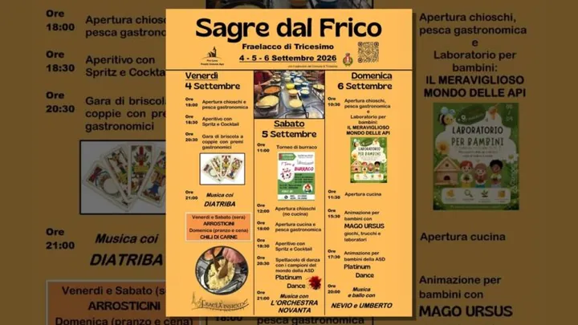

Friuli
da ven 4 set a dom 6 set · dalle 18:00
Sagre dal Frico
Tre giorni dedicati al frico con musica, ballo, tornei e laboratori per bambini.
 Indicazioni
Indicazioni
- Costi e prenotazioni
- Ingresso libero · tornei a pagamento · Iscrizione richiesta per i tornei
- Programma
- Programma confermato. Programma e orari ricavati dalla locandina dell’organizzatore.
- In caso di maltempo
- Nessuna indicazione specifica pubblicata.
- Note
- Venerdì e sabato sera sono disponibili anche gli arrosticini.
L’EVENTO
Descrizione completa
Tre giornate nel parco di Villa Veroi dedicate al frico e alla cucina friulana, con musica, ballo, tornei di carte, pesca gastronomica e attività per bambini. I chioschi seguono orari diversi nelle tre giornate.
Venerdì e sabato sera sono disponibili anche gli arrosticini. Domenica il chili di carne è proposto a pranzo e cena.
IL PROGRAMMA
Programma e orari
Appuntamenti raccolti dalle fonti elencate. Dove manca un orario, non è ancora disponibile in questa scheda.
Venerdì 4 settembre
- 18:00 · Chioschi e pesca gastronomica
- 18:30 · Aperitivo
- 20:30 · Torneo di briscola a coppie
- 21:00 · Diatriba dal vivo
Sabato 5 settembre
- 11:00 · Torneo di burraco, quota €20
- 12:00 · Apertura chioschi
- 18:00 · Cucina e pesca gastronomica
- 20:30 · Platinum Dance
- 21:00 · Orchestra Novanta
Domenica 6 settembre
- 10:30 · Chioschi e laboratorio “Il meraviglioso mondo delle api”
- 11:30 · Apertura cucina
- 15:30 · Mago Ursus
- 17:30 · Platinum Dance
- 20:00 · Musica e ballo con Nevio e Umberto
INFORMAZIONI UTILI
Prima di partire
- Venerdì e sabato sera sono disponibili anche gli arrosticini.
- Domenica il chili di carne è proposto a pranzo e cena.
ORGANIZZAZIONE